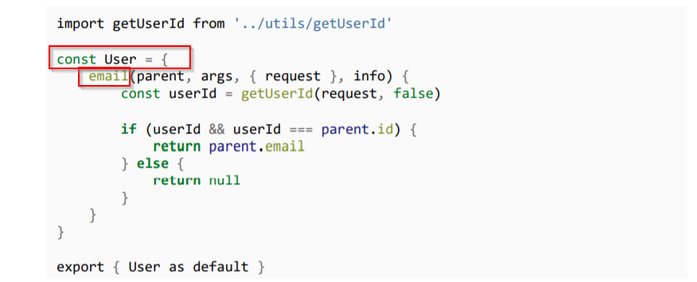

It might so happen that we need to lockdown certain fields. Something that cannot be made public like the users hashed password or the email.
In order to handle this issue we can either remove that field from the type or we can write custom resolver function for that particular field.

Now from here we can work on the logic that allows only certain fields to be displayed. Like here we are checking if the user is authenticated and then only allowing the email id to be displayed.
A better way to do this would be withfragments.